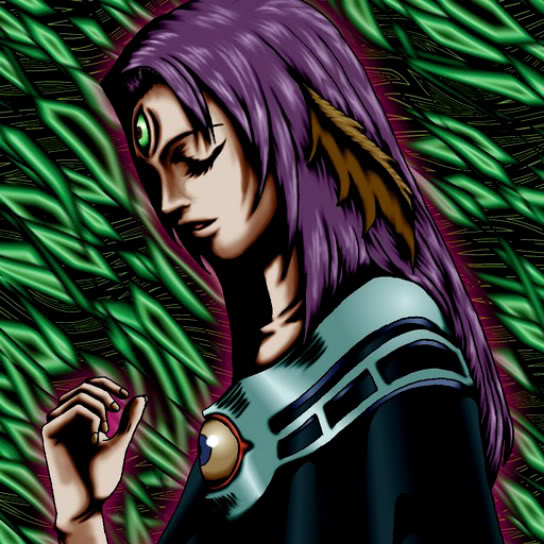

Witch of the Black Forest

Description: "While this card is face-up in the defense position, all LIGHT monsters are reduced 100 points."
STATS
ATK: 1100
DEF: 1200DECK COST
Deck Cost per Card: 28EFFECT NOT IMPLEMENTED
Fusion List (6 Possible Fusions)
- Witch of the Black Forest + Celtic Guardian = Dark Elf
- Witch of the Black Forest + Fiend's Hand = Magical Ghost
- Witch of the Black Forest + Hoshiningen = Dark Witch
- Witch of the Black Forest + Morphing Jar = Mystical Sand
- Witch of the Black Forest + Pot the Trick = Mystical Sand
- Witch of the Black Forest + Thunder Dragon = Kaminari Attack